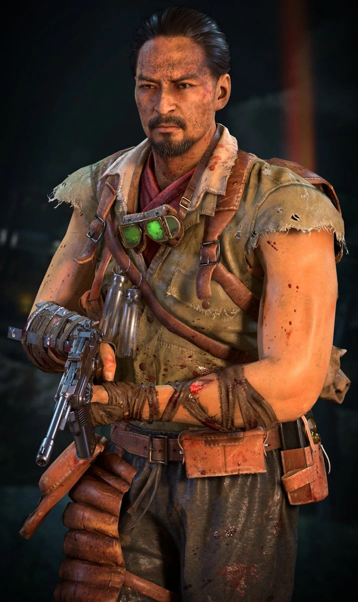

Takeo fue un orgulloso capitán en el Ejército Imperial, habiendo nacido en una familia poderosa, de la cual habían salido Samurais reconocidos en el Imperio. Takeo no era una excepción, y pronto se ganó la apreciación de su familia. Ahora, ha redirigido sus esfuerzos en luchar contra sus hermanos no-muertos (y zombies en general), mientras medita sobre diversas cuestiones filosóficas. Takeo es el más serio del grupo de supervivientes, y además el que menos habla en el grupo.